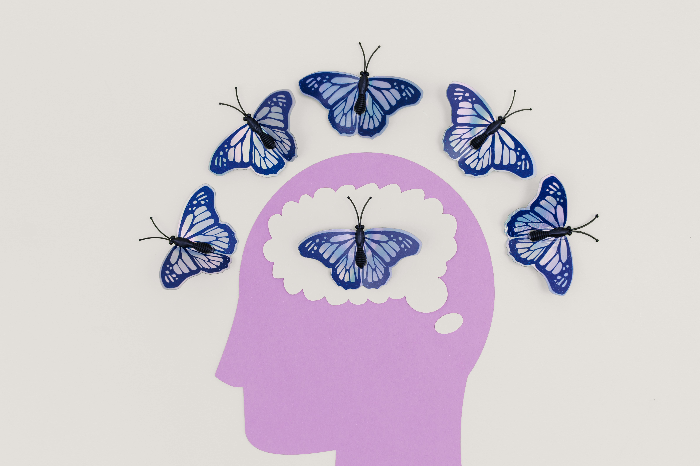
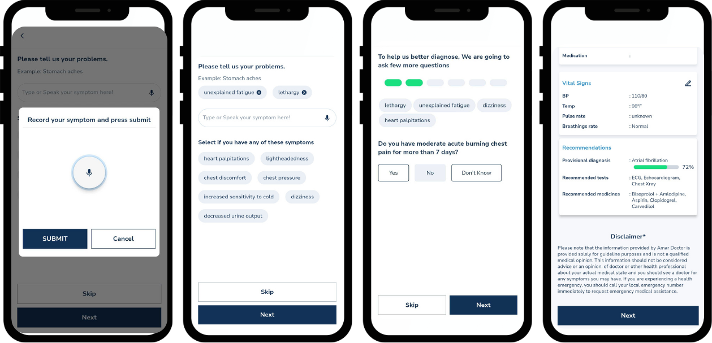
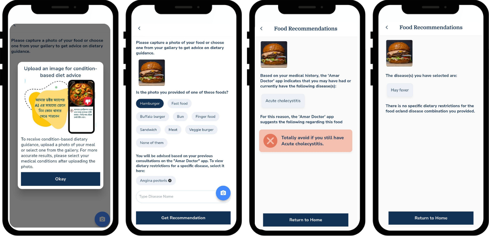

Portfolio
Applied AI and HCI projects spanning digital health, conversational systems, and trauma-informed computing.
AmarDoctor
AI-driven, multilingual digital healthcare platform serving 12,000+ Bengali-speaking users.

Therapeutic Computing
AI-assisted visualization framework for trauma-informed therapy.
Next Project
Emotional Safety on Social Platforms: A Qualitative Exploration
Additional Projects
Medical Records Digitization Pipeline
Problem: Paper-based records block access to patients' long-term medical history at point of care.
Solution: LLM-powered OCR system for automated clinical data extraction.
Impact: Improves patient safety and treatment accuracy through timely access to historical clinical data.
Watch DemoAI Symptom Checker & CDSS
Problem: Many patients face difficulty articulating their symptoms and identifying the right specialist.
Solution: A symptom checker that suggests relevant symptoms, asks targeted follow-up questions, and provides provisional diagnoses with specialist recommendations.
Impact: 81% diagnostic accuracy validated against physician assessments across 185 simulated patient cases.

Watch DemoMedical History-Driven Dietary Recommendation System
Problem: Gap between visual food recognition technology and personalized medical dietary counseling for chronic disease management.
Solution: Integrated computer vision-based food classification with medical knowledge systems for condition-specific dietary filtering and recommendations.
Impact: Enables real-time food guidance, improving patient adherence to dietary restrictions for chronic conditions.

Watch DemoMedical Assistant Chatbot
Problem: Users need to describe symptoms and access care without navigating complex interfaces.
Solution: Began as a RASA-based intent classifier for mental vs. physical health triage; evolved into an LLM-powered assistant serving as AmarDoctor's primary entry point for symptom assessment, appointment booking, and care navigation.
 GitHub
GitHub
Bengali OCR Using Deep Learning
Developed a novel word image dataset and trained deep neural networks (CNN, RNN, LSTM) to digitize printed Bengali literature.
SaaS Client Management System
Built a JWT-authenticated platform with PostgreSQL and AWS for managing secure healthcare API access and subscription tiers.